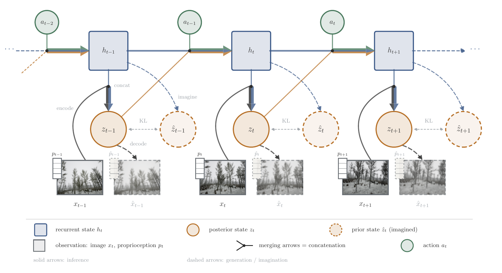
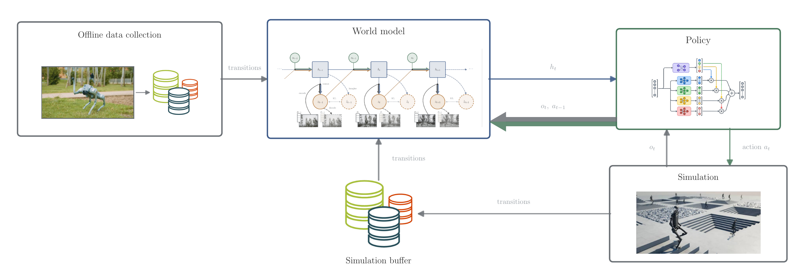
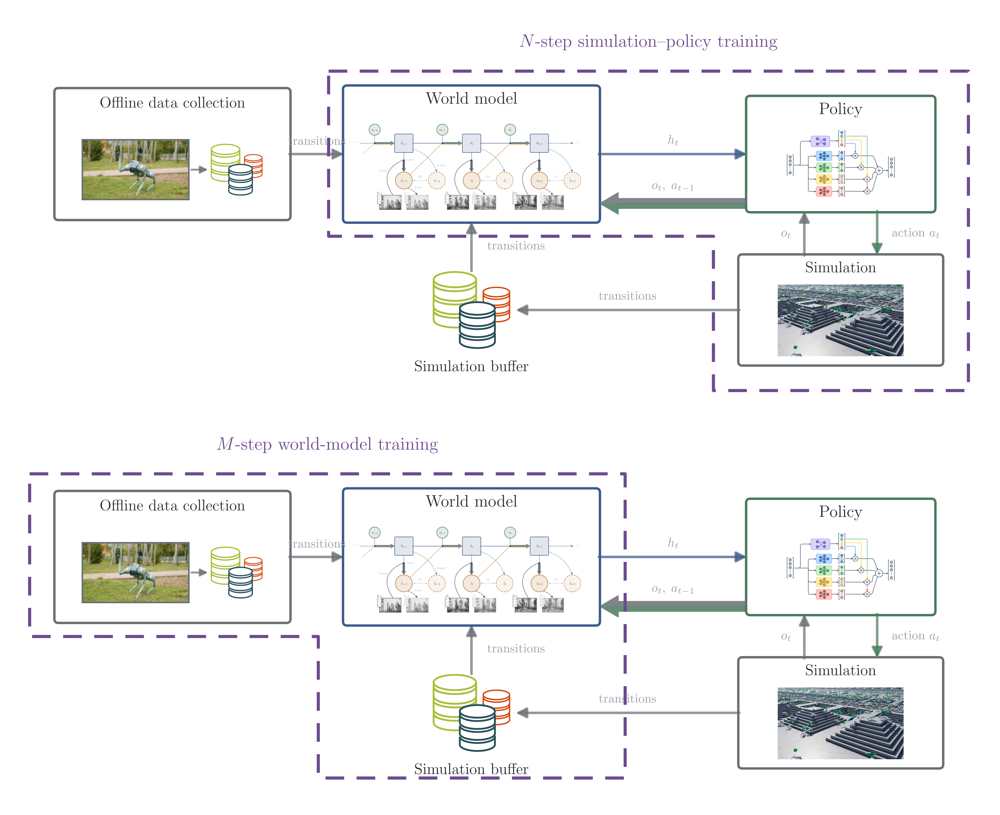

PerceptiveLoco
Learning perceptive locomotion with a world model trained jointly on offline real-world data and simulation.
Institution · 2026
Learning perceptive locomotion with a world model trained jointly on offline real-world data and simulation.
Institution · 2026
Placeholder. Open with the problem — a legged robot has to cross terrain it can see but has never touched, and the gap between what a simulator renders and what a real camera returns is where most policies break down.
Placeholder. At the centre of the method is a learned world model that compresses image and proprioceptive observations into a recurrent latent state, giving the policy a compact predictive summary of the terrain instead of raw pixels.

Placeholder. Explain how the model above is embedded in the training loop — where its data comes from, what consumes its output, and why training alternates between the two objectives rather than optimising them jointly.


Placeholder. One paragraph, or a results figure moved into a wide container like the ones above. Delete this section entirely if there's nothing to show yet — an empty heading reads worse than no heading.
@article{placeholder2026perceptiveloco,
title = {PerceptiveLoco},
author = {One, Author and Two, Author and Three, Author},
journal = {arXiv preprint},
year = {2026}
}